knitr::opts_chunk$set(warning = F,
message = F,
comment = "",
fig.align = "center",
fig.width = 8,
fig.height = 5)
使用するパッケージ
準備していないパッケージはinstall.packages("packge_name")でインストールする。
# 使用するパッケージ
library(tidyverse) # データの整形から可視化まで
library(magrittr) # パイプ処理を使いこなすせ！
library(gghighlight) # 重要なデータを強調する
# ggplot2 の theme をあらかじめ設定しておく
theme_set(theme_minimal(base_size = 15))
データの読み込み
今回使用するのは衆院選に出馬した各候補者のデータだ。
1996年から2017年までのデータが詰まっている。
データはこちら
data <- read_csv("./data/House_of_Councilors_1996_2017.csv") # 1996年～2017年までの衆院選データ
データ内の変数名を確認する
どんな変数があるか見てみよう。
names(data)
[1] "year" "ku" "kun" "status" "name"
[6] "party" "party_code" "previous" "wl" "voteshare"
[11] "age" "nocand" "rank" "vote" "eligible"
[16] "turnout" "exp" "expm" "vs" "exppv"
[21] "smd" "party_jpn"
各変数が意味するものは以下のようになっている。
| year |
実施年 |
|
| ku |
都道府県 |
|
| kun |
区域 |
|
| status |
現職か否か |
0 = 新人・元, 1 = 現職 |
| name |
名前 |
|
| party |
所属政党 |
ローマ字での略語 |
| party_code |
所属政党 |
数字で通し番号 |
| previous |
当選回数 |
|
| wl |
当落結果 |
0 = 落選, 1 = 当選, 2 = 復活当選 |
| voteshare |
得票率 |
単位: % |
| age |
年齢 |
|
| nocand |
候補者数 |
|
| rank |
順位 |
|
| vote |
得票数 |
|
| eligible |
有権者数 |
|
| turnout |
投票率 |
単位: % |
| exp |
選挙費用 |
単位: 円 |
| expm |
選挙費用 |
単位: 百万円 |
| vs |
得票割合 |
小数で表記 |
| exppv |
選挙費用 |
単位: 円（有権者一人当たりの選挙費用） |
| smd |
当落 |
0 = 落選, 1 = 当選 |
| party_jpn |
所属政党 |
日本語 |
データの整形
今回は当選者数を使って棒グラフを描いていく。
棒グラフは複数の属性を比較する際に使用する。例えば、各地の積雪量を比較する際に使用される。
今回は選挙データを使用するので、各政党の当選者数を可視化してみる。
data %<>%
group_by(year, party_jpn) %>% # 年ごと、各政党ごとに処理を行う
summarise(smd = sum(smd)) %>% # 各政党の当選者数を計算
filter(party_jpn %in% c("自民党", "民主党", "公明党")) %>%
as.data.frame() %>% # 一応
drop_na() # naを落とす
また、2005年の衆院選データを可視化することとする。
data_2005 <- data %>%
filter(year == 2005)
普通の棒グラフ
data_2005 %>%
ggplot(aes(x = party_jpn,
y = smd)) +
geom_bar(stat = "identity") +
labs(x = NULL, # X軸のラベル名を変える NULLを与えると無くなる
y = "当選者数", # Y軸のラベル名を変える
title = "2005年衆院選: 各政党の当選者数") # グラフにタイトルを付ける
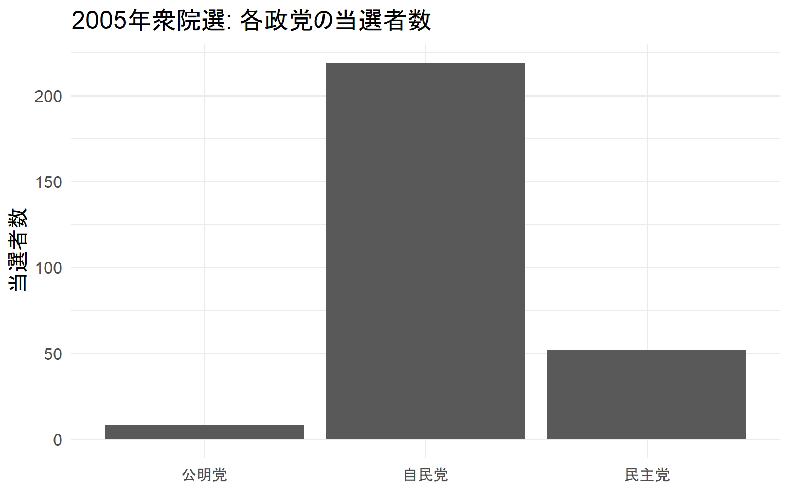
棒の色を変える
ggplot2で使用できる色のリストはこちら
data_2005 %>%
ggplot(aes(x = party_jpn,
y = smd)) +
geom_bar(stat = "identity",
color = "black", # 棒の枠の色を変える
fill = "orange") + # 棒の中の色を変える
labs(x = NULL,
y = "当選者数",
title = "2005年衆院選: 各政党の当選者数")
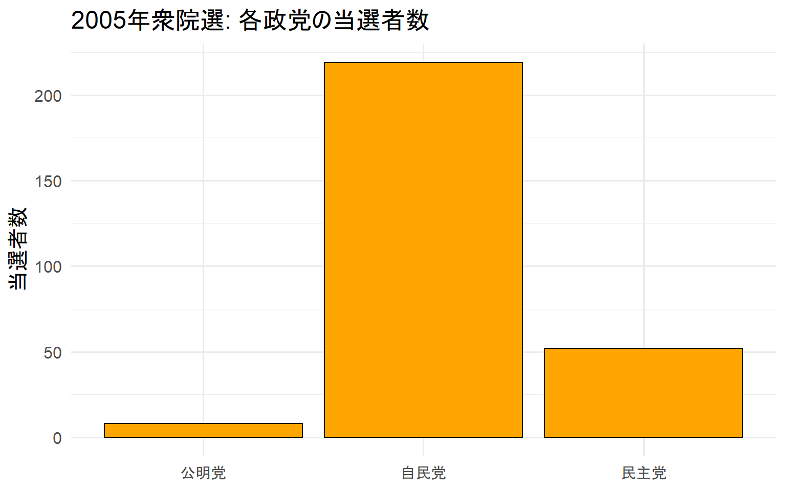
棒の並び替え
より見やすい棒グラフを作るのに、大きい順や小さい順に並び変えることは非常に有効だ。
fct_reorder(x, y, .desc = T)でYが大きい順にXを並び変える。
ggplot2のコード内で計算するのはおすすめしない。なるべくggplot2のコード外で計算を行う。
data_2005 %<>% mutate(party_jpn = fct_reorder(party_jpn, smd, .desc = T))
data_2005 %>%
ggplot(aes(x = party_jpn,
y = smd)) +
geom_bar(stat = "identity") +
labs(x = NULL,
y = "当選者数",
title = "2005年衆院選: 各政党の当選者数")
Yの値をラベルで表示する
大きい順や小さい順に並び変えても細かい数値が読み取れるわけではない。
そのため、ラベルを付けるとより見やすい棒グラフになる。
また、paste()を使うと数値の後に単位を付けられる。
その場合は、paste(smd, "人", sep = "")をlabel =に代入する。
data_2005 %>%
ggplot(aes(x = party_jpn,
y = smd)) +
geom_bar(stat = "identity") +
labs(x = NULL,
y = "当選者数",
title = "2005年衆院選: 各政党の当選者数") +
geom_label(aes(label = smd), # ラベルの数値
size = 8, # ラベルのサイズ
position = position_stack(vjust = 0.5)) # ラベルの位置
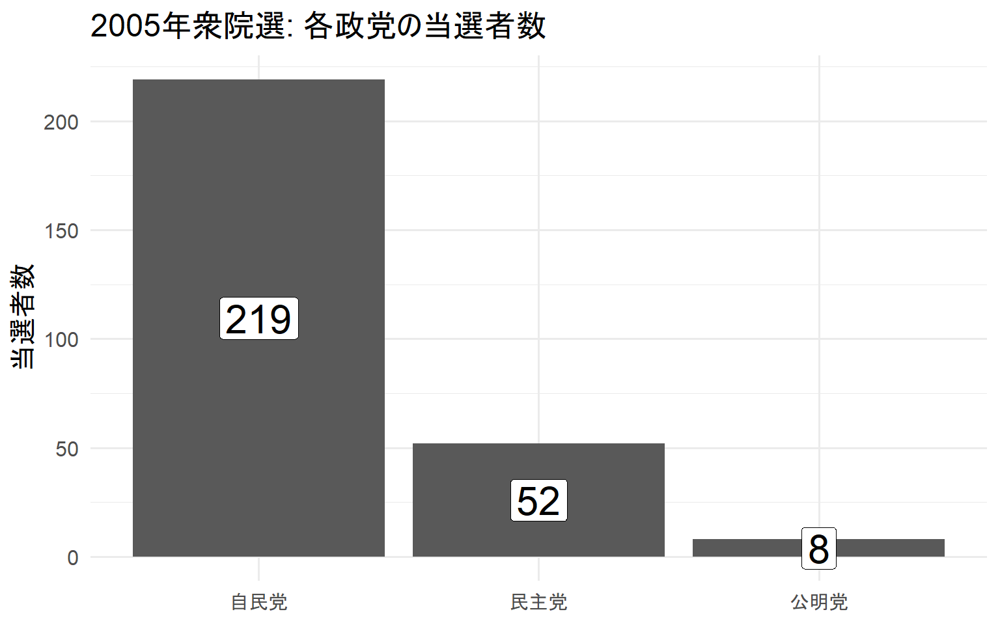
特定の棒の色を変える
図の中に、視線を集中させたい棒がある場合は色を活用しよう。
まずは、注目させたいものを1、それ以外を0とするダミー変数を作成する。
data_2005 %<>% mutate(ldp = if_else(party_jpn == "自民党", 1, 0))
data_2005 %>%
ggplot(aes(x = party_jpn,
y = smd)) +
geom_bar(aes(fill = factor(ldp)), # ldpの値によって色を変える
stat = "identity",
show.legend = F) + # show.legend = Fでlegendを非表示に
labs(x = NULL,
y = "当選者数",
title = "2005年衆院選: 各政党の当選者数") +
geom_label(aes(label = smd),
size = 8,
position = position_stack(vjust = 0.5))
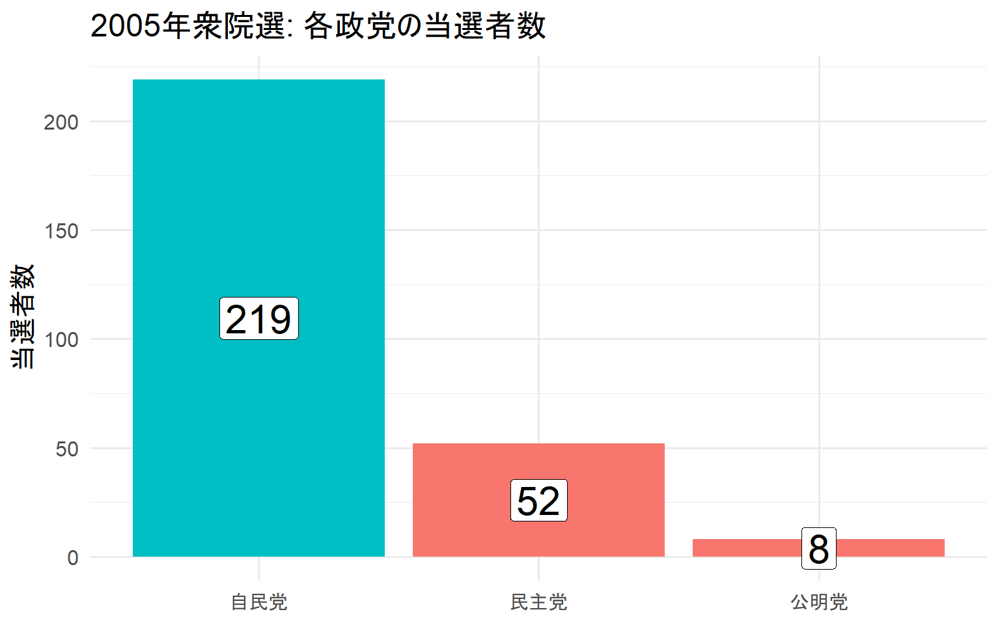
有彩色と無彩色で色分けをすると、より棒を強調することができる。
今回は赤とグレーで色分けしてみた。
data_2005 %>%
ggplot(aes(x = party_jpn,
y = smd)) +
geom_bar(aes(fill = factor(ldp)),
stat = "identity",
show.legend = F) +
labs(x = NULL,
y = "当選者数",
title = "2005年衆院選: 各政党の当選者数") +
geom_label(aes(label = smd),
size = 8,
position = position_stack(vjust = 0.5)) +
scale_fill_manual(values = c("grey","red")) # values = c("color0","color1")で色を選ぶ
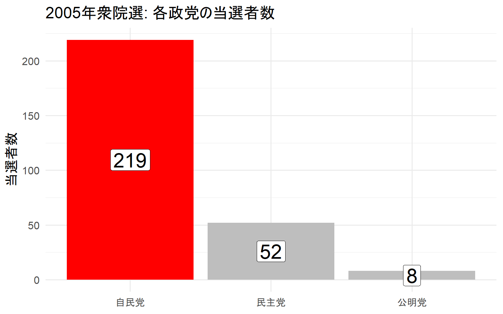
gghighlightを使った場合
簡単にグラフの強調を行うパッケージとしてgghighlightがある。
ただし、gghighlightはもっと大量のデータかつ、線グラフに使うほうが一般的だろう。
また、scale_fill_manual()を使えば色を選べる。
data_2005 %>%
ggplot(aes(x = party_jpn,
y = smd)) +
geom_bar(aes(fill = party_jpn),
stat = "identity",
show.legend = F) +
labs(x = NULL,
y = "当選者数",
title = "2005年衆院選: 各政党の当選者数") +
geom_label(aes(label = smd),
size = 8,
position = position_stack(vjust = 0.5)) +
gghighlight(party_jpn %in% c("自民党", "民主党")) # gghighlight()の中に色々条件を入れる
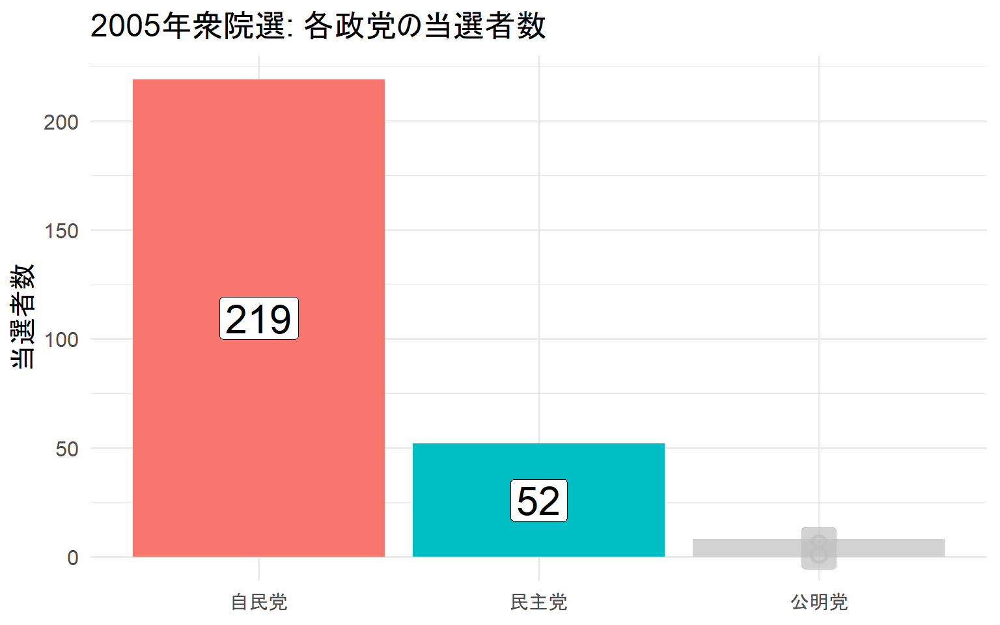
描画範囲の設定
棒グラフの上のほうが詰まりすぎると見えづらいことがある。
また、ラベルを棒の上に付けると見切れることがある。そういうときは描画範囲を調整する。
data_2005 %>%
ggplot(aes(x = party_jpn,
y = smd)) +
geom_bar(stat = "identity") +
labs(x = NULL,
y = "当選者数",
title = "2005年衆院選: 各政党の当選者数") +
geom_label(aes(label = smd),
size = 8) +
lims(y = c(0, 250)) # y軸を0～250まで表示する
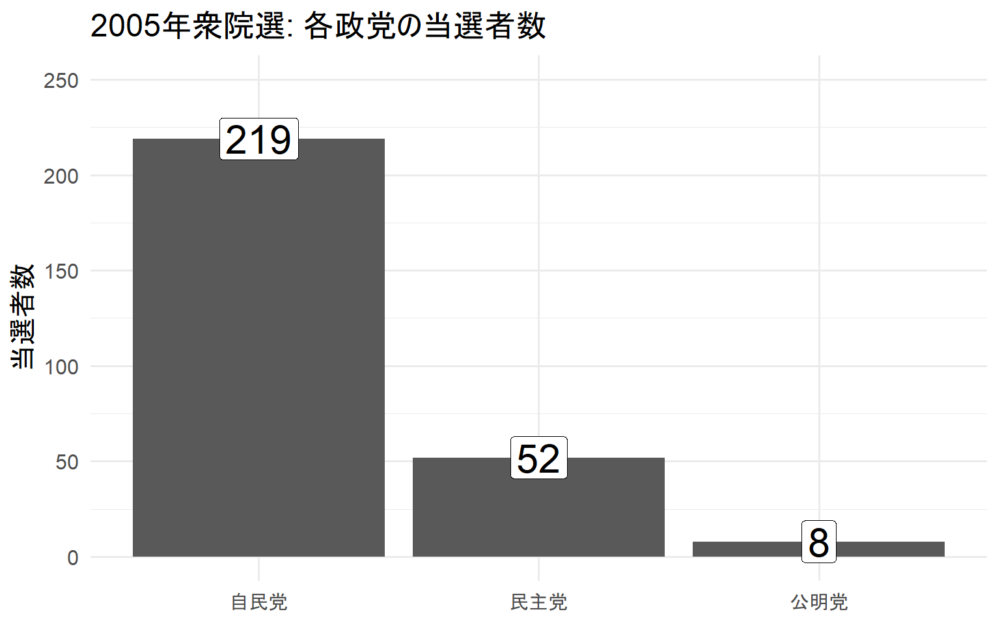
Xメモリの操作
xがカテゴリカル変数の場合、このような工夫で図を分かりやすくできる。
data_2005 %>%
ggplot(aes(x = party_jpn,
y = smd)) +
geom_bar(stat = "identity") +
labs(x = NULL,
y = "当選者数",
title = "2005年衆院選: 各政党の当選者数") +
geom_label(aes(label = smd),
size = 8,
position = position_stack(vjust = 0.5)) +
scale_x_discrete(labels = c("自民党" = "自民党\n(346人)", # 自民党を自民党\n(候補者数)に
"民主党" = "民主党\n(299人)", # 民主党を民主党\n(候補者数)に
"公明党" = "公明党\n(52人)")) # 公明党を公明党\n(候補者数)に
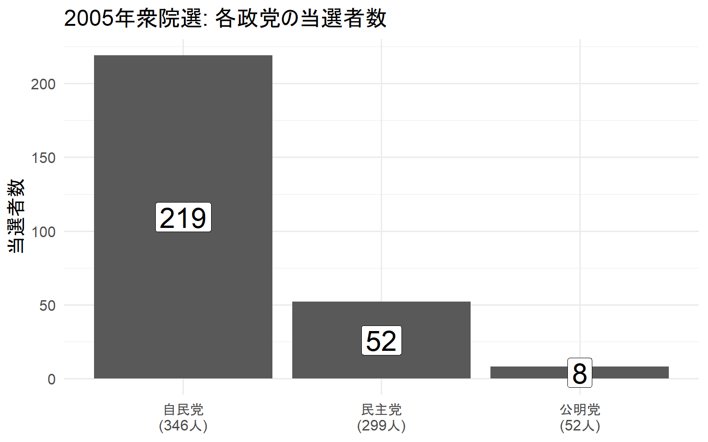
Yメモリの操作
メモリの刻みを増やしたり、メモリの範囲を制限したりできる。
あくまでもメモリの調整なので、xlim()やylim()とは別物だ。
data_2005 %>%
ggplot(aes(x = party_jpn,
y = smd)) +
geom_bar(stat = "identity") +
labs(x = NULL,
y = "当選者数",
title = "2005年衆院選: 各政党の当選者数") +
geom_label(aes(label = smd),
size = 8,
position = position_stack(vjust = 0.5)) +
scale_x_discrete(labels = c("自民党" = "自民党\n(346人)",
"民主党" = "民主党\n(299人)",
"公明党" = "公明党\n(52人)")) +
scale_y_continuous(breaks = seq(0, 220, length = 12)) # メモリの範囲と刻みを決める
グラフを回転させる
xが増えると文字が重なって見えにくくなる。文字の角度を変えてもいいが、視認性が低下する。
そのため、グラフを回転することをおすすめする。
data_2005 %>%
ggplot(aes(x = party_jpn,
y = smd)) +
geom_bar(stat = "identity") +
labs(x = NULL,
y = "当選者数",
title = "2005年衆院選: 各政党の当選者数") +
geom_label(aes(label = smd),
size = 8,
position = position_stack(vjust = 0.5)) +
coord_flip() # coord_flip()でグラフを回転させる。
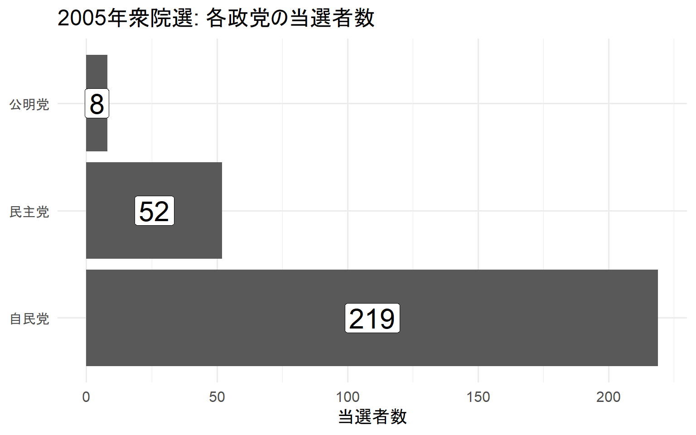
実施年毎の棒グラフ
小規模な時系列データは棒グラフで良いだろう。
ただ、大規模な時系列データは素直に折れ線グラフを使ったほうが見やすい。
今回は折れ線グラフのほうが視認性が高いだろう。
data %<>% mutate(year = fct_reorder(as.factor(year), year, .desc = F))
data %>%
ggplot(aes(x = party_jpn,
y = smd)) +
geom_bar(aes(fill = party_jpn),
stat = "identity",
show.legend = F) +
labs(x = NULL,
y = "当選者数",
title = "1996～2017年衆院選: 各政党の当選者数") +
geom_label(aes(label = smd),
position = position_stack(vjust = .9),
size = 3) +
facet_wrap(~ year)
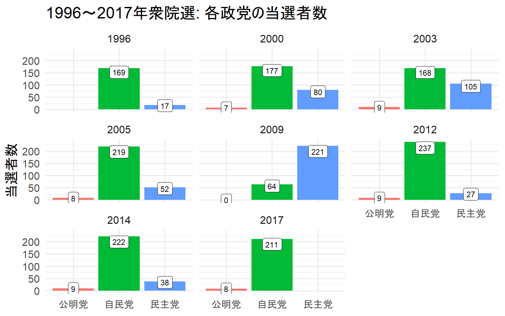
積み上げ棒グラフ
正直、積み上げ棒グラフ使うより折れ線グラフの方が視認性が高い。
使用は非推奨です。
data %>%
ggplot(aes(x = year,
y = smd)) +
geom_bar(aes(fill = party_jpn),
stat = "identity") +
labs(x = "実施年",
y = "当選者数",
title = "1996～2017年衆院選: 各政党の当選者数",
fill = NULL) + # fill = で生成されたlegendのタイトルを変更する
geom_label(aes(label = smd,
group = party_jpn),
size = 3,
position = position_stack(vjust = 0.5)) +
theme(legend.position = c(.06, .85)) # legendの位置を動かす
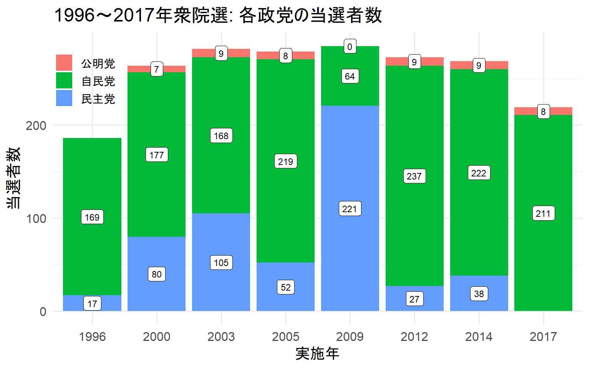
この記事のコードをまとめたものはGithubにあります。
LS0tDQp0aXRsZTogIkJhcnBsb3QiDQpkYXRlOiAiYHIgU3lzLnRpbWUoKWAiDQotLS0NCg0KYGBge3J9DQprbml0cjo6b3B0c19jaHVuayRzZXQod2FybmluZyA9IEYsDQogICAgICAgICAgICAgICAgICAgICAgbWVzc2FnZSA9IEYsDQogICAgICAgICAgICAgICAgICAgICAgY29tbWVudCA9ICIiLA0KICAgICAgICAgICAgICAgICAgICAgIGZpZy5hbGlnbiA9ICJjZW50ZXIiLA0KICAgICAgICAgICAgICAgICAgICAgIGZpZy53aWR0aCA9IDgsDQogICAgICAgICAgICAgICAgICAgICAgZmlnLmhlaWdodCA9IDUpDQpgYGANCg0KIyDkvb/nlKjjgZnjgovjg5Hjg4PjgrHjg7zjgrgNCg0K5rqW5YKZ44GX44Gm44GE44Gq44GE44OR44OD44Kx44O844K444GvYGluc3RhbGwucGFja2FnZXMoInBhY2tnZV9uYW1lIilg44Gn44Kk44Oz44K544OI44O844Or44GZ44KL44CCDQoNCmBgYHtyfQ0KIyDkvb/nlKjjgZnjgovjg5Hjg4PjgrHjg7zjgrgNCmxpYnJhcnkodGlkeXZlcnNlKSAjIOODh+ODvOOCv+OBruaVtOW9ouOBi+OCieWPr+imluWMluOBvuOBpw0KbGlicmFyeShtYWdyaXR0cikgIyDjg5HjgqTjg5flh6bnkIbjgpLkvb/jgYTjgZPjgarjgZnjgZvvvIENCmxpYnJhcnkoZ2doaWdobGlnaHQpICMg6YeN6KaB44Gq44OH44O844K/44KS5by36Kq/44GZ44KLDQoNCiMgZ2dwbG90MiDjga4gdGhlbWUg44KS44GC44KJ44GL44GY44KB6Kit5a6a44GX44Gm44GK44GPDQp0aGVtZV9zZXQodGhlbWVfbWluaW1hbChiYXNlX3NpemUgPSAxNSkpDQpgYGANCg0KIyDjg4fjg7zjgr/jga7oqq3jgb/ovrzjgb8NCg0K5LuK5Zue5L2/55So44GZ44KL44Gu44Gv6KGG6Zmi6YG444Gr5Ye66aas44GX44Gf5ZCE5YCZ6KOc6ICF44Gu44OH44O844K/44Gg44CCDQoNCjE5OTblubTjgYvjgokyMDE35bm044G+44Gn44Gu44OH44O844K/44GM6Kmw44G+44Gj44Gm44GE44KL44CCDQoNCuODh+ODvOOCv+OBr1vjgZPjgaHjgoldKC4vZGF0YS9Ib3VzZV9vZl9Db3VuY2lsb3JzXzE5OTZfMjAxNy5jc3YpDQoNCmBgYHtyfQ0KZGF0YSA8LSByZWFkX2NzdigiLi9kYXRhL0hvdXNlX29mX0NvdW5jaWxvcnNfMTk5Nl8yMDE3LmNzdiIpICMgMTk5NuW5tO+9njIwMTflubTjgb7jgafjga7ooYbpmaLpgbjjg4fjg7zjgr8NCmBgYA0KDQojIyDjg4fjg7zjgr/lhoXjga7lpInmlbDlkI3jgpLnorroqo3jgZnjgosNCg0K44Gp44KT44Gq5aSJ5pWw44GM44GC44KL44GL6KaL44Gm44G/44KI44GG44CCDQoNCmBgYHtyfQ0KbmFtZXMoZGF0YSkNCmBgYA0KDQrlkITlpInmlbDjgYzmhI/lkbPjgZnjgovjgoLjga7jga/ku6XkuIvjga7jgojjgYbjgavjgarjgaPjgabjgYTjgovjgIINCg0KfOWkieaVsOWQjSAgICB85YaF5a65ICAgIOOAgHzlgpnogIMgICAgICAgICAgICAgICAgICAgICAgICAgICAgICAgICAgfA0KfC0tLS0tLS0tLS18LS0tLS0tLS0tLXwtLS0tLS0tLS0tLS0tLS0tLS0tLS0tLS0tLS0tLS0tLS0tLS0tLXwNCnx5ZWFyICAgICAgfOWun+aWveW5tCAg44CAfCAgICAgICAgICAgICAgICAgICAgICAgICAgICAgICAgICAgICAgfA0KfGt1ICAgICAgICB86YO96YGT5bqc55yMICB8ICAgICAgICAgICAgICAgICAgICAgICAgICAgICAgICAgICAgICB8DQp8a3VuICAgICAgIHzljLrln58gICAg44CAfCAgICAgICAgICAgICAgICAgICAgICAgICAgICAgICAgICAgICAgfA0KfHN0YXR1cyAgICB854++6IG344GL5ZCm44GLfDAgPSDmlrDkurrjg7vlhYMsIDEgPSDnj77ogbcgICAgICAgICAgICAgICAgfA0KfG5hbWUgICAgICB85ZCN5YmNICAgICAgfCAgICAgICAgICAgICAgICAgICAgICAgICAgICAgICAgICAgICAgfA0KfHBhcnR5ICAgICB85omA5bGe5pS/5YWaICB844Ot44O844Oe5a2X44Gn44Gu55Wl6KqeICAgICAgICAgICAgICAgICAgICAgIHwNCnxwYXJ0eV9jb2RlfOaJgOWxnuaUv+WFmiAgfOaVsOWtl+OBp+mAmuOBl+eVquWPtyAgICAgICAgICAgICAgICAgICAgICAgIHwNCnxwcmV2aW91cyAgfOW9k+mBuOWbnuaVsCAgfCAgICAgICAgICAgICAgICAgICAgICAgICAgICAgICAgICAgICAgfA0KfHdsICAgICAgICB85b2T6JC957WQ5p6c44CAfDAgPSDokL3pgbgsIDEgPSDlvZPpgbgsIDIgPSDlvqnmtLvlvZPpgbggICAgICB8DQp8dm90ZXNoYXJlIHzlvpfnpajnjocgICAgfOWNmOS9jTogJSAgICAgICAgICAgICAgICAgICAgICAgICAgICAgICB8DQp8YWdlICAgICAgIHzlubTpvaIgICAgICB8ICAgICAgICAgICAgICAgICAgICAgICAgICAgICAgICAgICAgICB8DQp8bm9jYW5kICAgIHzlgJnoo5zogIXmlbAgIHwgICAgICAgICAgICAgICAgICAgICAgICAgICAgICAgICAgICAgIHwNCnxyYW5rICAgICAgfOmghuS9jeOAgOOAgOOAgHwgICAgICAgICAgICAgICAgICAgICAgICAgICAgICAgICAgICAgIHwNCnx2b3RlICAgICAgfOW+l+elqOaVsOOAgOOAgHwgICAgICAgICAgICAgICAgICAgICAgICAgICAgICAgICAgICAgIHwNCnxlbGlnaWJsZSAgfOacieaoqeiAheaVsCAgfCAgICAgICAgICAgICAgICAgICAgICAgICAgICAgICAgICAgICAgfA0KfHR1cm5vdXQJIHzmipXnpajnjocgICAgfOWNmOS9jTogJSAgICAgICAgICAgICAgICAgICAgICAgICAgICAgICB8DQp8ZXhwCSAgICAgfOmBuOaMmeiyu+eUqCAgfOWNmOS9jTog5YaGICAgICAgICAgICAgICAgICAgICAgICAgICAgICAgfA0KfGV4cG0gICAgICB86YG45oyZ6LK755So44CAfOWNmOS9jTog55m+5LiH5YaGICAgICAgICAgICAgICAgICAgICAgICAgICB8DQp8dnMJICAgICAgIHzlvpfnpajlibLlkIggIHzlsI/mlbDjgafooajoqJggICAgICAgICAgICAgICAgICAgICAgICAgICAgfA0KfGV4cHB2ICAgICB86YG45oyZ6LK755SoICB85Y2Y5L2NOiDlhobvvIjmnInmqKnogIXkuIDkurrlvZPjgZ/jgorjga7pgbjmjJnosrvnlKjvvIl8DQp8c21kCSAgICAgfOW9k+iQvSAgICAgIHwwID0g6JC96YG4LCAxID0g5b2T6YG4ICAgICAgICAgICAgICAgICAgICB8DQp8cGFydHlfanBuIHzmiYDlsZ7mlL/lhZrjgIB85pel5pys6KqeICAgICAgICAgICAgICAgICAgICAgICAgICAgICAgICB8DQoNCiMjIOODh+ODvOOCv+OBruaVtOW9og0KDQrku4rlm57jga/lvZPpgbjogIXmlbDjgpLkvb/jgaPjgabmo5LjgrDjg6njg5XjgpLmj4/jgYTjgabjgYTjgY/jgIINCg0K5qOS44Kw44Op44OV44Gv6KSH5pWw44Gu5bGe5oCn44KS5q+U6LyD44GZ44KL6Zqb44Gr5L2/55So44GZ44KL44CC5L6L44GI44Gw44CB5ZCE5Zyw44Gu56mN6Zuq6YeP44KS5q+U6LyD44GZ44KL6Zqb44Gr5L2/55So44GV44KM44KL44CCDQoNCuS7iuWbnuOBr+mBuOaMmeODh+ODvOOCv+OCkuS9v+eUqOOBmeOCi+OBruOBp+OAgeWQhOaUv+WFmuOBruW9k+mBuOiAheaVsOOCkuWPr+imluWMluOBl+OBpuOBv+OCi+OAgg0KDQpgYGB7cn0NCmRhdGEgJTw+JSANCiAgZ3JvdXBfYnkoeWVhciwgcGFydHlfanBuKSAlPiUgIyDlubTjgZTjgajjgIHlkITmlL/lhZrjgZTjgajjgavlh6bnkIbjgpLooYzjgYYNCiAgc3VtbWFyaXNlKHNtZCA9IHN1bShzbWQpKSAlPiUgICMg5ZCE5pS/5YWa44Gu5b2T6YG46ICF5pWw44KS6KiI566XDQogIGZpbHRlcihwYXJ0eV9qcG4gJWluJSBjKCLoh6rmsJHlhZoiLCAi5rCR5Li75YWaIiwgIuWFrOaYjuWFmiIpKSAlPiUgDQogIGFzLmRhdGEuZnJhbWUoKSAlPiUgIyDkuIDlv5wNCiAgZHJvcF9uYSgpICMgbmHjgpLokL3jgajjgZkNCmBgYA0KDQrjgb7jgZ/jgIEyMDA15bm044Gu6KGG6Zmi6YG444OH44O844K/44KS5Y+v6KaW5YyW44GZ44KL44GT44Go44Go44GZ44KL44CCDQoNCmBgYHtyfQ0KZGF0YV8yMDA1IDwtIGRhdGEgJT4lIA0KICBmaWx0ZXIoeWVhciA9PSAyMDA1KQ0KYGBgDQoNCiMg5pmu6YCa44Gu5qOS44Kw44Op44OVDQoNCmBgYHtyfQ0KZGF0YV8yMDA1ICU+JSANCiAgZ2dwbG90KGFlcyh4ID0gcGFydHlfanBuLCANCiAgICAgICAgICAgICB5ID0gc21kKSkgKw0KICBnZW9tX2JhcihzdGF0ID0gImlkZW50aXR5IikgKw0KICBsYWJzKHggPSBOVUxMLCAjIFjou7jjga7jg6njg5njg6vlkI3jgpLlpInjgYjjgovjgIBOVUxM44KS5LiO44GI44KL44Go54Sh44GP44Gq44KLDQogICAgICAgeSA9ICLlvZPpgbjogIXmlbAiLCAjIFnou7jjga7jg6njg5njg6vlkI3jgpLlpInjgYjjgosNCiAgICAgICB0aXRsZSA9ICIyMDA15bm06KGG6Zmi6YG4OiDlkITmlL/lhZrjga7lvZPpgbjogIXmlbAiKSAjIOOCsOODqeODleOBq+OCv+OCpOODiOODq+OCkuS7mOOBkeOCiw0KYGBgDQoNCiMg5qOS44Gu6Imy44KS5aSJ44GI44KLDQoNCmdncGxvdDLjgafkvb/nlKjjgafjgY3jgovoibLjga7jg6rjgrnjg4jjga9b44GT44Gh44KJXSguL2RvY3VtZW50L2dncGxvdDJfY29sb3ItbGlzdC5wZGYpDQoNCmBgYHtyfQ0KZGF0YV8yMDA1ICU+JSANCiAgZ2dwbG90KGFlcyh4ID0gcGFydHlfanBuLA0KICAgICAgICAgICAgIHkgPSBzbWQpKSArDQogIGdlb21fYmFyKHN0YXQgPSAiaWRlbnRpdHkiLA0KICAgICAgICAgICBjb2xvciA9ICJibGFjayIsICMg5qOS44Gu5p6g44Gu6Imy44KS5aSJ44GI44KLDQogICAgICAgICAgIGZpbGwgPSAib3JhbmdlIikgKyAjIOajkuOBruS4reOBruiJsuOCkuWkieOBiOOCiw0KICBsYWJzKHggPSBOVUxMLCANCiAgICAgICB5ID0gIuW9k+mBuOiAheaVsCIsDQogICAgICAgdGl0bGUgPSAiMjAwNeW5tOihhumZoumBuDog5ZCE5pS/5YWa44Gu5b2T6YG46ICF5pWwIikgDQpgYGANCg0KIyDmo5Ljga7kuKbjgbPmm7/jgYgNCg0K44KI44KK6KaL44KE44GZ44GE5qOS44Kw44Op44OV44KS5L2c44KL44Gu44Gr44CB5aSn44GN44GE6aCG44KE5bCP44GV44GE6aCG44Gr5Lim44Gz5aSJ44GI44KL44GT44Go44Gv6Z2e5bi444Gr5pyJ5Yq544Gg44CCDQoNCmBmY3RfcmVvcmRlcih4LCB5LCAuZGVzYyA9IFQpYOOBp1njgYzlpKfjgY3jgYTpoIbjgatY44KS5Lim44Gz5aSJ44GI44KL44CCDQoNCmdncGxvdDLjga7jgrPjg7zjg4nlhoXjgafoqIjnrpfjgZnjgovjga7jga/jgYrjgZnjgZnjgoHjgZfjgarjgYTjgILjgarjgovjgbnjgY9nZ3Bsb3Qy44Gu44Kz44O844OJ5aSW44Gn6KiI566X44KS6KGM44GG44CCDQoNCmBgYHtyfQ0KZGF0YV8yMDA1ICU8PiUgbXV0YXRlKHBhcnR5X2pwbiA9IGZjdF9yZW9yZGVyKHBhcnR5X2pwbiwgc21kLCAuZGVzYyA9IFQpKSANCmBgYA0KDQpgYGB7cn0NCmRhdGFfMjAwNSAlPiUgDQogIGdncGxvdChhZXMoeCA9IHBhcnR5X2pwbiwgDQogICAgICAgICAgICAgeSA9IHNtZCkpICsNCiAgZ2VvbV9iYXIoc3RhdCA9ICJpZGVudGl0eSIpICsNCiAgbGFicyh4ID0gTlVMTCwNCiAgICAgICB5ID0gIuW9k+mBuOiAheaVsCIsDQogICAgICAgdGl0bGUgPSAiMjAwNeW5tOihhumZoumBuDog5ZCE5pS/5YWa44Gu5b2T6YG46ICF5pWwIikgDQpgYGANCg0KIyBZ44Gu5YCk44KS44Op44OZ44Or44Gn6KGo56S644GZ44KLDQoNCuWkp+OBjeOBhOmghuOChOWwj+OBleOBhOmghuOBq+S4puOBs+WkieOBiOOBpuOCgue0sOOBi+OBhOaVsOWApOOBjOiqreOBv+WPluOCjOOCi+OCj+OBkeOBp+OBr+OBquOBhOOAgg0KDQrjgZ3jga7jgZ/jgoHjgIHjg6njg5njg6vjgpLku5jjgZHjgovjgajjgojjgoropovjgoTjgZnjgYTmo5LjgrDjg6njg5XjgavjgarjgovjgIINCg0K44G+44Gf44CBYHBhc3RlKClg44KS5L2/44GG44Go5pWw5YCk44Gu5b6M44Gr5Y2Y5L2N44KS5LuY44GR44KJ44KM44KL44CCDQoNCuOBneOBruWgtOWQiOOBr+OAgWBwYXN0ZShzbWQsICLkuroiLCBzZXAgPSAiIilg44KSYGxhYmVsID0gYOOBq+S7o+WFpeOBmeOCi+OAgg0KDQpgYGB7cn0NCmRhdGFfMjAwNSAlPiUgDQogIGdncGxvdChhZXMoeCA9IHBhcnR5X2pwbiwNCiAgICAgICAgICAgICB5ID0gc21kKSkgKw0KICBnZW9tX2JhcihzdGF0ID0gImlkZW50aXR5IikgKw0KICBsYWJzKHggPSBOVUxMLCANCiAgICAgICB5ID0gIuW9k+mBuOiAheaVsCIsDQogICAgICAgdGl0bGUgPSAiMjAwNeW5tOihhumZoumBuDog5ZCE5pS/5YWa44Gu5b2T6YG46ICF5pWwIikgKw0KICBnZW9tX2xhYmVsKGFlcyhsYWJlbCA944CAc21kKSwgIyDjg6njg5njg6vjga7mlbDlgKQNCiAgICAgICAgICAgICBzaXplID0gOCwgIyDjg6njg5njg6vjga7jgrXjgqTjgroNCiAgICAgICAgICAgICBwb3NpdGlvbiA9IHBvc2l0aW9uX3N0YWNrKHZqdXN0ID0gMC41KSkgIyDjg6njg5njg6vjga7kvY3nva4gDQpgYGANCg0KIyDnibnlrprjga7mo5Ljga7oibLjgpLlpInjgYjjgosNCg0K5Zuz44Gu5Lit44Gr44CB6KaW57ea44KS6ZuG5Lit44GV44Gb44Gf44GE5qOS44GM44GC44KL5aC05ZCI44Gv6Imy44KS5rS755So44GX44KI44GG44CCDQoNCuOBvuOBmuOBr+OAgeazqOebruOBleOBm+OBn+OBhOOCguOBruOCkjHjgIHjgZ3jgozku6XlpJbjgpIw44Go44GZ44KL44OA44Of44O85aSJ5pWw44KS5L2c5oiQ44GZ44KL44CCDQoNCmBgYHtyfQ0KZGF0YV8yMDA1ICU8PiUgbXV0YXRlKGxkcCA9IGlmX2Vsc2UocGFydHlfanBuID09ICLoh6rmsJHlhZoiLCAxLCAwKSkNCmBgYA0KDQpgYGB7cn0NCmRhdGFfMjAwNSAlPiUgDQogIGdncGxvdChhZXMoeCA9IHBhcnR5X2pwbiwgICAgICAgICAgICAgICAgICANCiAgICAgICAgICAgICB5ID0gc21kKSkgKyANCiAgZ2VvbV9iYXIoYWVzKGZpbGwgPSBmYWN0b3IobGRwKSksICMgbGRw44Gu5YCk44Gr44KI44Gj44Gm6Imy44KS5aSJ44GI44KLDQogICAgICAgICAgIHN0YXQgPSAiaWRlbnRpdHkiLA0KICAgICAgICAgICBzaG93LmxlZ2VuZCA9IEYpICsgIyBzaG93LmxlZ2VuZCA9IEbjgadsZWdlbmTjgpLpnZ7ooajnpLrjgasNCiAgbGFicyh4ID0gTlVMTCwNCiAgICAgICB5ID0gIuW9k+mBuOiAheaVsCIsIA0KICAgICAgIHRpdGxlID0gIjIwMDXlubTooYbpmaLpgbg6IOWQhOaUv+WFmuOBruW9k+mBuOiAheaVsCIpICsNCiAgZ2VvbV9sYWJlbChhZXMobGFiZWwgPSBzbWQpLCAgICAgICAgICAgICAgICAgICAgICAgICAgICAgICAgICANCiAgICAgICAgICAgICBzaXplID0gOCwgICAgICAgICAgICAgICAgICAgICAgICAgICAgICAgICAgICAgICAgICAgICAgICAgICAgICAgICAgDQogICAgICAgICAgICAgcG9zaXRpb24gPSBwb3NpdGlvbl9zdGFjayh2anVzdCA9IDAuNSkpIA0KYGBgDQoNCuacieW9qeiJsuOBqOeEoeW9qeiJsuOBp+iJsuWIhuOBkeOCkuOBmeOCi+OBqOOAgeOCiOOCiuajkuOCkuW8t+iqv+OBmeOCi+OBk+OBqOOBjOOBp+OBjeOCi+OAgg0KDQrku4rlm57jga/otaTjgajjgrDjg6zjg7zjgafoibLliIbjgZHjgZfjgabjgb/jgZ/jgIINCg0KYGBge3J9DQpkYXRhXzIwMDUgJT4lIA0KICBnZ3Bsb3QoYWVzKHggPSBwYXJ0eV9qcG4sICAgICAgICAgICAgICAgICAgDQogICAgICAgICAgICAgeSA9IHNtZCkpICsgDQogIGdlb21fYmFyKGFlcyhmaWxsID0gZmFjdG9yKGxkcCkpLCANCiAgICAgICAgICAgc3RhdCA9ICJpZGVudGl0eSIsDQogICAgICAgICAgIHNob3cubGVnZW5kID0gRikgKw0KICBsYWJzKHggPSBOVUxMLA0KICAgICAgIHkgPSAi5b2T6YG46ICF5pWwIiwgDQogICAgICAgdGl0bGUgPSAiMjAwNeW5tOihhumZoumBuDog5ZCE5pS/5YWa44Gu5b2T6YG46ICF5pWwIikgKw0KICBnZW9tX2xhYmVsKGFlcyhsYWJlbCA9IHNtZCksICAgICAgICAgICAgICAgICAgICAgICAgICAgICAgICAgIA0KICAgICAgICAgICAgIHNpemUgPSA4LCAgICAgICAgICAgICAgICAgICAgICAgICAgICAgICAgICAgICAgICAgICAgICAgICAgICAgICAgICANCiAgICAgICAgICAgICBwb3NpdGlvbiA9IHBvc2l0aW9uX3N0YWNrKHZqdXN0ID0gMC41KSkgKw0KICBzY2FsZV9maWxsX21hbnVhbCh2YWx1ZXMgPSBjKCJncmV5IiwicmVkIikpICMgdmFsdWVzID0gYygiY29sb3IwIiwiY29sb3IxIinjgafoibLjgpLpgbjjgbYNCmBgYA0KDQojIGdnaGlnaGxpZ2h044KS5L2/44Gj44Gf5aC05ZCIDQoNCuewoeWNmOOBq+OCsOODqeODleOBruW8t+iqv+OCkuihjOOBhuODkeODg+OCseODvOOCuOOBqOOBl+OBpmBnZ2hpZ2hsaWdodGDjgYzjgYLjgovjgIINCg0K44Gf44Gg44GX44CBYGdnaGlnaGxpZ2h0YOOBr+OCguOBo+OBqOWkp+mHj+OBruODh+ODvOOCv+OBi+OBpOOAgee3muOCsOODqeODleOBq+S9v+OBhuOBu+OBhuOBjOS4gOiIrOeahOOBoOOCjeOBhuOAgg0KDQrjgb7jgZ/jgIFgc2NhbGVfZmlsbF9tYW51YWwoKWDjgpLkvb/jgYjjgbDoibLjgpLpgbjjgbnjgovjgIINCg0KYGBge3J9DQpkYXRhXzIwMDUgJT4lIA0KICBnZ3Bsb3QoYWVzKHggPSBwYXJ0eV9qcG4sICAgICAgICAgICAgICAgICAgDQogICAgICAgICAgICAgeSA9IHNtZCkpICsgDQogIGdlb21fYmFyKGFlcyhmaWxsID0gcGFydHlfanBuKSwNCiAgICAgICAgICAgc3RhdCA9ICJpZGVudGl0eSIsDQogICAgICAgICAgIHNob3cubGVnZW5kID0gRikgKw0KICBsYWJzKHggPSBOVUxMLCANCiAgICAgICB5ID0gIuW9k+mBuOiAheaVsCIsIA0KICAgICAgIHRpdGxlID0gIjIwMDXlubTooYbpmaLpgbg6IOWQhOaUv+WFmuOBruW9k+mBuOiAheaVsCIpICsNCiAgZ2VvbV9sYWJlbChhZXMobGFiZWwgPSBzbWQpLCAgICAgICAgICAgICAgICAgICAgICAgICAgICAgICAgICANCiAgICAgICAgICAgICBzaXplID0gOCwgICAgICAgICAgICAgICAgICAgICAgICAgICAgICAgICAgICAgICAgICAgICAgICAgICAgICAgICAgDQogICAgICAgICAgICAgcG9zaXRpb24gPSBwb3NpdGlvbl9zdGFjayh2anVzdCA9IDAuNSkpICsNCiAgZ2doaWdobGlnaHQocGFydHlfanBuICVpbiUgYygi6Ieq5rCR5YWaIiwgIuawkeS4u+WFmiIpKSAjIGdnaGlnaGxpZ2h0KCnjga7kuK3jgavoibLjgIXmnaHku7bjgpLlhaXjgozjgosNCmBgYA0KDQojIOaPj+eUu+evhOWbsuOBruioreWumg0KDQrmo5LjgrDjg6njg5Xjga7kuIrjga7jgbvjgYbjgYzoqbDjgb7jgorjgZnjgY7jgovjgajopovjgYjjgaXjgonjgYTjgZPjgajjgYzjgYLjgovjgIINCg0K44G+44Gf44CB44Op44OZ44Or44KS5qOS44Gu5LiK44Gr5LuY44GR44KL44Go6KaL5YiH44KM44KL44GT44Go44GM44GC44KL44CC44Gd44GG44GE44GG44Go44GN44Gv5o+P55S756+E5Zuy44KS6Kq/5pW044GZ44KL44CCDQoNCmBgYHtyfQ0KZGF0YV8yMDA1ICU+JSANCiAgZ2dwbG90KGFlcyh4ID0gcGFydHlfanBuLCAgICAgICAgICAgICAgICAgIA0KICAgICAgICAgICAgIHkgPSBzbWQpKSArDQogIGdlb21fYmFyKHN0YXQgPSAiaWRlbnRpdHkiKSArIA0KICBsYWJzKHggPSBOVUxMLA0KICAgICAgIHkgPSAi5b2T6YG46ICF5pWwIiwNCiAgICAgICB0aXRsZSA9ICIyMDA15bm06KGG6Zmi6YG4OiDlkITmlL/lhZrjga7lvZPpgbjogIXmlbAiKSArDQogIGdlb21fbGFiZWwoYWVzKGxhYmVsID0gc21kKSwgICAgICAgICAgICAgICAgICAgICAgICAgICAgICAgICAgDQogICAgICAgICAgICAgc2l6ZSA9IDgpICsNCiAgbGltcyh5ID0gYygwLCAyNTApKSAjIHnou7jjgpIw772eMjUw44G+44Gn6KGo56S644GZ44KLDQpgYGANCg0KIyBY44Oh44Oi44Oq44Gu5pON5L2cDQoNCnjjgYzjgqvjg4bjgrTjg6rjgqvjg6vlpInmlbDjga7loLTlkIjjgIHjgZPjga7jgojjgYbjgarlt6XlpKvjgaflm7PjgpLliIbjgYvjgorjgoTjgZnjgY/jgafjgY3jgovjgIINCg0KYGBge3J9DQpkYXRhXzIwMDUgJT4lIA0KICBnZ3Bsb3QoYWVzKHggPSBwYXJ0eV9qcG4sICAgICAgICAgICAgICAgICAgDQogICAgICAgICAgICAgeSA9IHNtZCkpICsNCiAgZ2VvbV9iYXIoc3RhdCA9ICJpZGVudGl0eSIpICsgICAgICAgDQogIGxhYnMoeCA9IE5VTEwsDQogICAgICAgeSA9ICLlvZPpgbjogIXmlbAiLA0KICAgICAgIHRpdGxlID0gIjIwMDXlubTooYbpmaLpgbg6IOWQhOaUv+WFmuOBruW9k+mBuOiAheaVsCIpICsNCiAgZ2VvbV9sYWJlbChhZXMobGFiZWwgPSBzbWQpLA0KICAgICAgICAgICAgIHNpemUgPSA4LCAgICAgICAgICAgICAgICAgICAgICAgICAgICAgICAgICAgICAgICAgICAgICAgICAgICAgICAgICANCiAgICAgICAgICAgICBwb3NpdGlvbiA9IHBvc2l0aW9uX3N0YWNrKHZqdXN0ID0gMC41KSkgKw0KICBzY2FsZV94X2Rpc2NyZXRlKGxhYmVscyA9IGMoIuiHquawkeWFmiIgPSAi6Ieq5rCR5YWaXG4oMzQ25Lq6KSIsICMg6Ieq5rCR5YWa44KS6Ieq5rCR5YWaXG4o5YCZ6KOc6ICF5pWwKeOBqw0KICAgICAgICAgICAgICAgICAgICAgICAgICAgICAgIuawkeS4u+WFmiIgPSAi5rCR5Li75YWaXG4oMjk55Lq6KSIsICMg5rCR5Li75YWa44KS5rCR5Li75YWaXG4o5YCZ6KOc6ICF5pWwKeOBqw0KICAgICAgICAgICAgICAgICAgICAgICAgICAgICAgIuWFrOaYjuWFmiIgPSAi5YWs5piO5YWaXG4oNTLkuropIikpICMg5YWs5piO5YWa44KS5YWs5piO5YWaXG4o5YCZ6KOc6ICF5pWwKeOBqw0KYGBgDQoNCiMgWeODoeODouODquOBruaTjeS9nA0KDQrjg6Hjg6Ljg6rjga7liLvjgb/jgpLlopfjgoTjgZfjgZ/jgorjgIHjg6Hjg6Ljg6rjga7nr4Tlm7LjgpLliLbpmZDjgZfjgZ/jgorjgafjgY3jgovjgIINCg0K44GC44GP44G+44Gn44KC44Oh44Oi44Oq44Gu6Kq/5pW044Gq44Gu44Gn44CBYHhsaW0oKWDjgoRgeWxpbSgpYOOBqOOBr+WIpeeJqeOBoOOAgg0KDQpgYGB7cn0NCmRhdGFfMjAwNSAlPiUgDQogIGdncGxvdChhZXMoeCA9IHBhcnR5X2pwbiwgICAgICAgICAgICAgICAgICANCiAgICAgICAgICAgICB5ID0gc21kKSkgKw0KICBnZW9tX2JhcihzdGF0ID0gImlkZW50aXR5IikgKyAgICAgICANCiAgbGFicyh4ID0gTlVMTCwNCiAgICAgICB5ID0gIuW9k+mBuOiAheaVsCIsDQogICAgICAgdGl0bGUgPSAiMjAwNeW5tOihhumZoumBuDog5ZCE5pS/5YWa44Gu5b2T6YG46ICF5pWwIikgKw0KICBnZW9tX2xhYmVsKGFlcyhsYWJlbCA9IHNtZCksICAgICAgICAgICAgICAgICAgICAgICAgICAgICAgICAgIA0KICAgICAgICAgICAgIHNpemUgPSA4LCAgICAgICAgICAgICAgICAgICAgICAgICAgICAgICAgICAgICAgICAgICAgICAgICAgICAgICAgICANCiAgICAgICAgICAgICBwb3NpdGlvbiA9IHBvc2l0aW9uX3N0YWNrKHZqdXN0ID0gMC41KSkgKw0KICBzY2FsZV94X2Rpc2NyZXRlKGxhYmVscyA9IGMoIuiHquawkeWFmiIgPSAi6Ieq5rCR5YWaXG4oMzQ25Lq6KSIsIA0KICAgICAgICAgICAgICAgICAgICAgICAgICAgICAgIuawkeS4u+WFmiIgPSAi5rCR5Li75YWaXG4oMjk55Lq6KSIsIA0KICAgICAgICAgICAgICAgICAgICAgICAgICAgICAgIuWFrOaYjuWFmiIgPSAi5YWs5piO5YWaXG4oNTLkuropIikpICsgDQogIHNjYWxlX3lfY29udGludW91cyhicmVha3MgPSBzZXEoMCwgMjIwLCBsZW5ndGggPSAxMikpICMg44Oh44Oi44Oq44Gu56+E5Zuy44Go5Yi744G/44KS5rG644KB44KLDQpgYGANCg0KIyDjgrDjg6njg5XjgpLlm57ou6LjgZXjgZvjgosNCg0KeOOBjOWil+OBiOOCi+OBqOaWh+Wtl+OBjOmHjeOBquOBo+OBpuimi+OBiOOBq+OBj+OBj+OBquOCi+OAguaWh+Wtl+OBruinkuW6puOCkuWkieOBiOOBpuOCguOBhOOBhOOBjOOAgeimluiqjeaAp+OBjOS9juS4i+OBmeOCi+OAgg0KDQrjgZ3jga7jgZ/jgoHjgIHjgrDjg6njg5XjgpLlm57ou6LjgZnjgovjgZPjgajjgpLjgYrjgZnjgZnjgoHjgZnjgovjgIINCg0KYGBge3J9DQpkYXRhXzIwMDUgJT4lIA0KICBnZ3Bsb3QoYWVzKHggPSBwYXJ0eV9qcG4sICAgICAgICAgICAgICAgICAgDQogICAgICAgICAgICAgeSA9IHNtZCkpICsNCiAgZ2VvbV9iYXIoc3RhdCA9ICJpZGVudGl0eSIpICsgICAgICAgDQogIGxhYnMoeCA9IE5VTEwsDQogICAgICAgeSA9ICLlvZPpgbjogIXmlbAiLA0KICAgICAgIHRpdGxlID0gIjIwMDXlubTooYbpmaLpgbg6IOWQhOaUv+WFmuOBruW9k+mBuOiAheaVsCIpICsNCiAgZ2VvbV9sYWJlbChhZXMobGFiZWwgPSBzbWQpLCAgICAgICAgICAgICAgICAgICAgICAgICAgICAgICAgICANCiAgICAgICAgICAgICBzaXplID0gOCwgICAgICAgICAgICAgICAgICAgICAgICAgICAgICAgICAgICAgICAgICAgICAgICAgICAgICAgICAgDQogICAgICAgICAgICAgcG9zaXRpb24gPSBwb3NpdGlvbl9zdGFjayh2anVzdCA9IDAuNSkpICsNCiAgY29vcmRfZmxpcCgpICMgY29vcmRfZmxpcCgp44Gn44Kw44Op44OV44KS5Zue6Lui44GV44Gb44KL44CCDQpgYGANCg0KIyDlrp/mlr3lubTmr47jga7mo5LjgrDjg6njg5UNCg0K5bCP6KaP5qih44Gq5pmC57O75YiX44OH44O844K/44Gv5qOS44Kw44Op44OV44Gn6Imv44GE44Gg44KN44GG44CCDQoNCuOBn+OBoOOAgeWkp+imj+aooeOBquaZguezu+WIl+ODh+ODvOOCv+OBr+e0oOebtOOBq+aKmOOCjOe3muOCsOODqeODleOCkuS9v+OBo+OBn+OBu+OBhuOBjOimi+OChOOBmeOBhOOAgg0KDQrku4rlm57jga/mipjjgoznt5rjgrDjg6njg5Xjga7jgbvjgYbjgYzoppboqo3mgKfjgYzpq5jjgYTjgaDjgo3jgYbjgIINCg0KYGBge3J9DQpkYXRhICU8PiUgbXV0YXRlKHllYXIgPSBmY3RfcmVvcmRlcihhcy5mYWN0b3IoeWVhciksIHllYXIsIC5kZXNjID0gRikpIA0KYGBgDQoNCmBgYHtyfQ0KZGF0YSAlPiUgDQogIGdncGxvdChhZXMoeCA9IHBhcnR5X2pwbiwNCiAgICAgICAgICAgICB5ID0gc21kKSkgKw0KICBnZW9tX2JhcihhZXMoZmlsbCA9IHBhcnR5X2pwbiksIA0KICAgICAgICAgICBzdGF0ID0gImlkZW50aXR5IiwNCiAgICAgICAgICAgc2hvdy5sZWdlbmQgPSBGKSArDQogIGxhYnMoeCA9IE5VTEwsDQogICAgICAgeSA9ICLlvZPpgbjogIXmlbAiLCANCiAgICAgICB0aXRsZSA9ICIxOTk2772eMjAxN+W5tOihhumZoumBuDog5ZCE5pS/5YWa44Gu5b2T6YG46ICF5pWwIikgKw0KICBnZW9tX2xhYmVsKGFlcyhsYWJlbCA9IHNtZCksIA0KICAgICAgICAgICAgIHBvc2l0aW9uID0gcG9zaXRpb25fc3RhY2sodmp1c3QgPSAuOSksDQogICAgICAgICAgICAgc2l6ZSA9IDMpICsgDQogIGZhY2V0X3dyYXAofiB5ZWFyKSANCmBgYA0KDQojIOepjeOBv+S4iuOBkuajkuOCsOODqeODlQ0KDQrmraPnm7TjgIHnqY3jgb/kuIrjgZLmo5LjgrDjg6njg5Xkvb/jgYbjgojjgormipjjgoznt5rjgrDjg6njg5Xjga7mlrnjgYzoppboqo3mgKfjgYzpq5jjgYTjgIINCg0K5L2/55So44Gv6Z2e5o6o5aWo44Gn44GZ44CCDQoNCmBgYHtyfQ0KZGF0YSAlPiUgDQogIGdncGxvdChhZXMoeCA9IHllYXIsDQogICAgICAgICAgICAgeSA9IHNtZCkpICsNCiAgZ2VvbV9iYXIoYWVzKGZpbGwgPSBwYXJ0eV9qcG4pLCANCiAgICAgICAgICAgc3RhdCA9ICJpZGVudGl0eSIpICsNCiAgbGFicyh4ID0gIuWun+aWveW5tCIsIA0KICAgICAgIHkgPSAi5b2T6YG46ICF5pWwIiwNCiAgICAgICB0aXRsZSA9ICIxOTk2772eMjAxN+W5tOihhumZoumBuDog5ZCE5pS/5YWa44Gu5b2T6YG46ICF5pWwIiwNCiAgICAgICBmaWxsID0gTlVMTCkgKyAjIGZpbGwgPSDjgafnlJ/miJDjgZXjgozjgZ9sZWdlbmTjga7jgr/jgqTjg4jjg6vjgpLlpInmm7TjgZnjgosNCiAgZ2VvbV9sYWJlbChhZXMobGFiZWwgPSBzbWQsDQogICAgICAgICAgICAgICAgIGdyb3VwID0gcGFydHlfanBuKSwNCiAgICAgICAgICAgICBzaXplID0gMywNCiAgICAgICAgICAgICBwb3NpdGlvbiA9IHBvc2l0aW9uX3N0YWNrKHZqdXN0ID0gMC41KSkgKw0KICB0aGVtZShsZWdlbmQucG9zaXRpb24gPSBjKC4wNiwgLjg1KSkgIyBsZWdlbmTjga7kvY3nva7jgpLli5XjgYvjgZkNCmBgYA0KDQo8SFI+DQoNCuOBk+OBruiomOS6i+OBruOCs+ODvOODieOCkuOBvuOBqOOCgeOBn+OCguOBruOBr1tHaXRodWJdKGh0dHBzOi8vZ2l0aHViLmNvbS9GcnVpdEdyYW5vbGEvUl9CYXJwbG90KeOBq+OBguOCiuOBvuOBmeOAgg0K